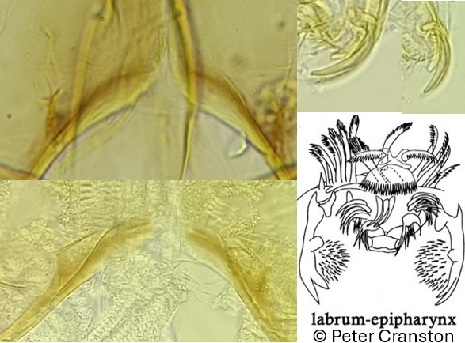
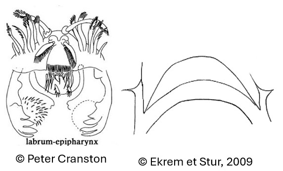

Tribu des Tanytarsini
Plaques ventromentales éloignées, présence d'une large épine sur le socle antennaire


Prémandibules avec 2 ou 3 dents
Si prémandibules avec 2 dents, plaque postoccipitale bien développée et fendue. Si prémandibules avec 3 dents, plaque posstoccipitale faiblement développée et continue.
Prémandibules avec 4 dents
Plaque postoccipitale bien développée, continue et large
Les genres Stempellinella et Zavrelia sont difficiles à distinguer, et notamment l’estimation du nombre de dent des prémandibules à cause des touffes prémandibulaires épaisses. En dernier recours, noter les individus « Stempellinella/Zavrelia ». Une planche résumant les différences entre Stempellinella et Zavrelia est disponible ici